install.packages("tuneR")Аудио дохио боловсруулалт
Дохио боловсруулалт дахь магадлал ба статистикийн зарим хэрэглээ
Энэхүү документ нь www.magadlal.com/course/9/project удирдамжийн дагуу гүйцэтгэх төслийн даалгавруудыг хэрхэн хийх тухай нэмэлт заавар ба Quarto Document файлын жишээ болно.
Оюутнууд компьютерийн програмыг Python хэлээр бичиж, ажиллуулах ба иймд түүнээс өөр програмчлалын хэл, тухайлбал R хэл ашиглана. R хэлээр бичсэн кодыг R [1] програмын 4.6.2 хувилбар дээр ажиллуулсан.
R дээр аудио өгөгдөлтэй ажиллахад tuneR болон seewave гэдэг хоёр багц ашигладаг [2] ба энд эхлээд tuneR багцыг ашиглах бөгөөд шаардлага гарвал нөгөө багцыг нэмэлтээр ашиглана. Тус багцыг дараах тушаалаар R програмд суулгана.
1 Бичлэг хийх
Энэхүү даалгаврын заавар дахь жишээ файл болох www.magadlal.com/d/datasets/original.wav файлыг гар утас дээр тоглуулсанаа лэптопын микрофоноор бичиж аваад record.wav нэртэй файлд WAV форматаар хадгалав. Бичлэг хийж улмаар бичлэг дэх хэрэгцээгүй хэсгийг тасдаж хаяхад Audacity [3] програм ашиглав.
2 Цэвэр шуугиан ба шуугиан болон яриа холилдсон хэсгийг салгах
Эхлээд аудио бичлэг агуулж буй record.wav файлыг R програмд ачаална.
record <- tuneR::readWave("record.wav")Ачаалсан өгөгдлийг агуулах объектыг record гэж нэрлэв. tuneR багцын тусламжтай үүссэн энэхүү объект нь Wave гэдэг нэртэй S4 классын объект байна.
2.1 Sample rate ба Bit Depth тодорхойлох
Sample rate шинжийг record объектын samp.rate гэдэг аттрибут агуулна.
record@samp.rate |> cat()44100Энд програмын гаралтыг [1] шиг элементийн индексгүй хэвлэхийн тулд cat() функц нэмэлтээр ашигласан.
record нь S4 объект тул аттрибутыг нь дуудахдаа R хэлний @ оператор ашиглана.
Sample rate нь аудио бичлэгийн уртыг (секундээр) олох болон хоёр өөр sample rate бүхий өгөгдлийг зэрэгцүүлэн авч үзэх зэрэгт зайлшгүй хэрэгтэй.
Бичлэгийн уртыг \[\text{Length in seconds} = \frac{\text{Signal Length}}{\text{Sample Rate}}\] томьёогоор олно.
{
record@left |> length() / record@samp.rate
} |>
cat()10.41415Энд left нь стерео бичлэгийн зүүн суваг юм. Жич: Бичлэг моно тул баруун суваг хоосон байна. Иймд зөвхөн зүүн сувгийг ашиглана. Ийнхүү зүүн суваг дахь дохионы уртыг samp.rate аттрибутын утгад хувааснаар бичлэгийн уртыг секундээр илэрхийлэх утга гарна. Бичлэгийн урт ойролцоогоор 10.4 секунд байна.
Харин Bit Depth нь өгөгдөл агуулж буй объектын bit нэртэй элементэд агуулагдана.
record@bit |> cat()162.2 Waveform дүрслэх
tuneR::plot(record)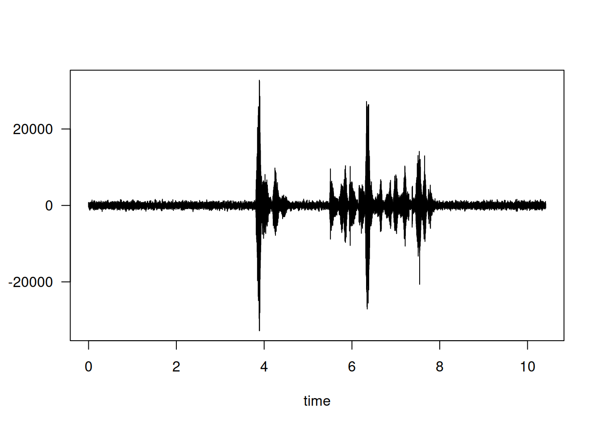
2.3 Noise ба Speech хэсгүүдийг салгах
Эхлээд noise хэсгийг салгаж авна.
2.3.1 Noise хэсгийг салгах
Noise хэсэг бичлэгийн эхний 3 секундыг хамарсан. Иймд record объектын эхний 3 секундын урттай хэсгийг салган авч noise гэж тусад нь хадгална.
Эхлээд noise хэсгийн эхлэх ба дуусах цэгийг заана.
start_sec <- 0.0 # noise эхлэх секунд
end_sec <- 3.0 # noise дуусах секундОдоо дээр заасан (секундээр илэрхийлэгдсэн) моментууд record түүврийн элементүүдийн чухам аль индексийг зааж буйг олно.
start_sample <- max(round(start_sec * record@samp.rate), 1)
end_sample <- max(round(end_sec * record@samp.rate), 1)Энд max(#,1) нь R объектын элементийн индекс нэгээс эхэлдэгтэй холбоотой.
noise хэсгийн эхлэл төгсгөл тодорхой болсон тул үүнийг record объектоос ялгаж авна.
noise <- record[start_sample:end_sample,]Эцэст нь noise объектыг noise.wav файлд хадгалав.
tuneR::writeWave(noise, "noise.wav")2.3.2 Speech хэсгийг салгах
Энэ нь эхлэх ба дуусах секундыг заах болон объектын нэрээс бусдаар өмнөхтэй ижил юм.
start_sec <- 3.0 # speech эхлэх секунд
end_sec <- 9.0 # speech дуусах секунд
start_sample <- max(round(start_sec * record@samp.rate), 1)
end_sample <- max(round(end_sec * record@samp.rate), 1)
speech <- record[start_sample:end_sample,] # Шинэ объектыг speech гэж нэрлэв.
tuneR::writeWave(speech, "speech.wav")Ийнхүү тус хэсгийг салгаж аваад speech гэдэг нэртэй объект болгов. Түүнчлэн үүнийг speech.wav файлд хадгалсан.
3 Шуугианы статистик шинжилгээ
3.1 Тайлбарлагч статистикуудыг тооцоолох
Дундаж
noise@left |> mean() |> cat()0.7320106Дисперс буюу дундаж квадрат хазайлт
noise@left |> var() |> cat()137677.8Стандарт хазайлт
noise@left |> sd() |> cat()371.0496noise@left |> var() |> sqrt() |> cat()371.0496Шуугианы дундаж 0.7320106 нь стандарт хазайлтын 371.0496025 утгатай харьцуулбал бага тоо юм. Энэ нь шуугианы дундаж тэгтэй тэнцүү гэж таамаглах үндэслэл болно.
3.2 Тархалтыг шинжлэх
Шуугианы тархалтыг гистограммаар дүрслэв.
hist(noise@left, xlab = "Шуугиан", ylab = "Давтамж", main = "Гистограмм")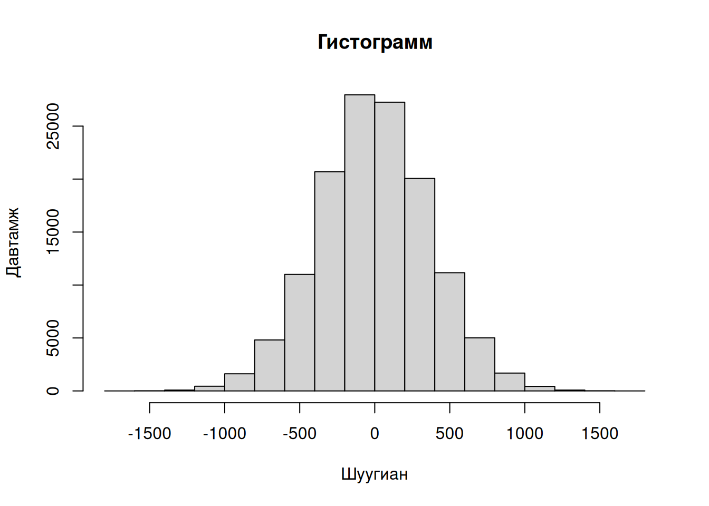
Гистограммын хэлбэр нь шуугианыг хэвийн тархалттай гэж таамаглаж болохуйц харагдана.
Улмаар өгөгдөл хэвийн тархалттай хэр нийцэж эсвэл гажиж буйг харахын тулд Q-Q диаграмм байгуулав.
qqnorm(noise@left)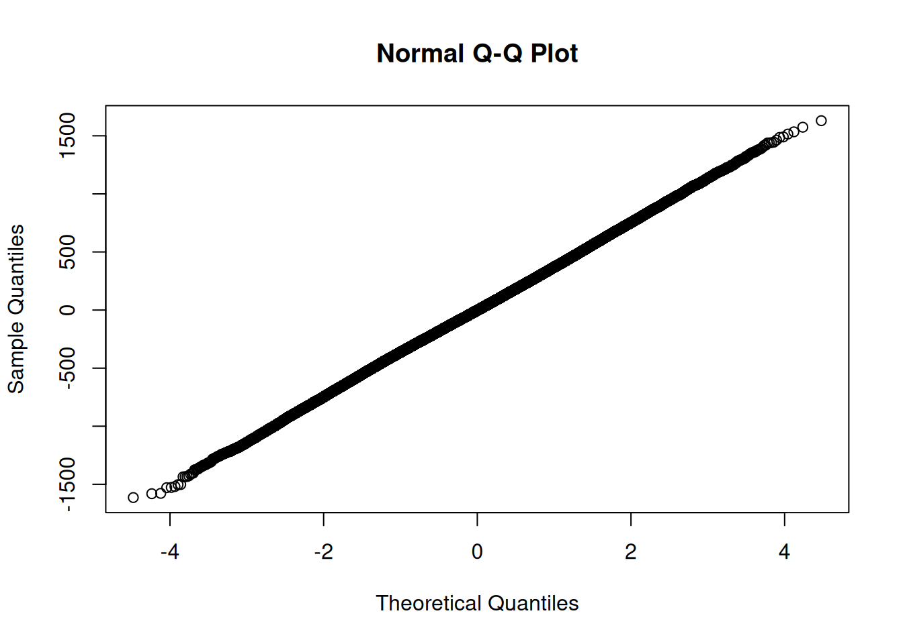
Түүврийн элемент бүртэй харгалзах түүврийн квантил ба хэвийн тархалтаас олсон онолын квантил хоёроор тодорхойлогдох цэгүүд үндсэндээ нэг шулууны дагуу байрласан нь түүврийн тархалтыг хэвийн тархалттай тохирч буйг илтгэсэн явдал юм.
3.2.1 Экстрем утга илрүүлэх
Экстрем буюу онцгой утга буй эсэхийг шалгахдаа хайрцган диаграмм ашиглав.
boxplot(noise@left, horizontal = TRUE)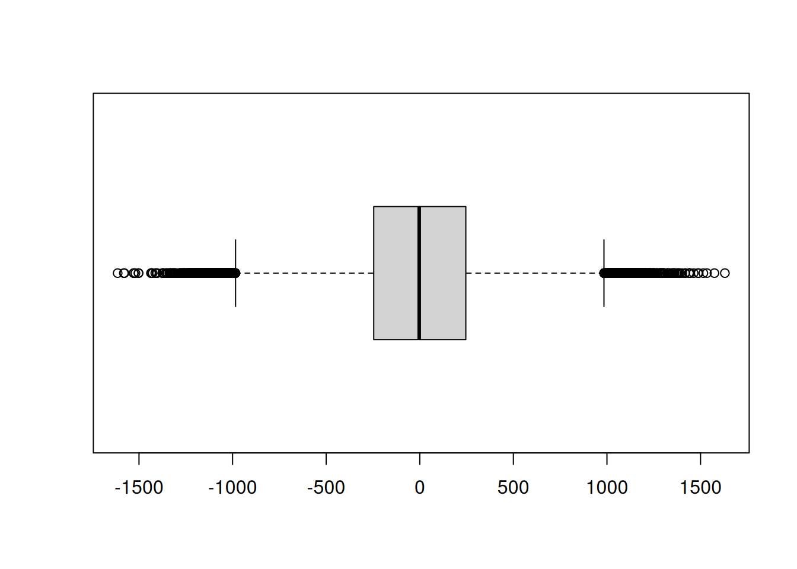
Байгуулсан хайрцган диаграмм дээр цөөнгүй цэг дүрслэгдсэн нь онцгой утгууд төдий олон буйг илтгэсэн явдал юм. Иймд шуугианыг хэвийн тархалттай гэсэн таамаглалыг шалгах болон шуугианы дундаж тэгтэй тэнцүү гэсэн таамаглалыг ч шалгахдаа эдгээр онцгой утгуудыг харгалзан үзнэ.
3.2.2 Хэвийн тархалтын тохирцын тухай таамаглал шалгах
Хэвийн тархалттай гэсэн таамаглалыг Шафиро-Уилкийн шинжүүрээр шалгав.
set.seed(17) # Санамсаргүй түүврийг бэхлэх үүрэгтэй.
noise@left |>
sample(size = 5000) |> # Өгөгдлөөс 5000 элемент санамсаргүй түүвэрлэн авна.
shapiro.test()
Shapiro-Wilk normality test
data: sample(noise@left, size = 5000)
W = 0.99947, p-value = 0.1732Өгөгдлөөс 5000 элемент санамсаргүй түүвэрлэн авсан нь shapiro.test() функцийн шаардлагыг хангах зорилготой үйлдэл юм. Тус функц түүврийн хэмжээг хамгийн ихдээ 5000 байхыг шаарддаг.
Таамаглал шалгалтын үр дүн болох p-value нь \(\alpha=0.05\) ач холбогдлын түвшингээс их гарсан тул шуугианыг хэвийн тархалттай гэсэн тэг таамаглалыг үл няцаана.
3.3 Шуугианы дунджийн тухай таамаглал шалгах
Шуугианы математик дундаж тэгтэй тэнцүү гэсэн тэг таамаглалыг \(t\) шинжүүрээр шалгав.
noise@left |> t.test(mu = 0)
One Sample t-test
data: noise@left
t = 0.71757, df = 132299, p-value = 0.473
alternative hypothesis: true mean is not equal to 0
95 percent confidence interval:
-1.267410 2.731431
sample estimates:
mean of x
0.7320106 \(\text{p-value}\leq\alpha=0.05\) нөхцөл үл биелэх тул тус ач холбогдлын түвшинд шуугианы дундаж тэгтэй тэнцүү гэсэн тэг таамаглалыг үл няцаана.
3.4 Шуугианы автокорреляцийг шинжлэх
Автокорреляцийн коэффициент нь \((N_1,N_2,\ldots,N_n)\) түүврийн \(N_i\) ба \(N_{i-k}\) гэсэн \(k\) алхмын зайтайгаар дэс дараалсан элементүүдийн хоорондох хамаарлыг хэмждэг. Энд \(k\) параметрийг автокорреляцийн эрэмбэ гэнэ.
acf(noise@left, lag.max = 50)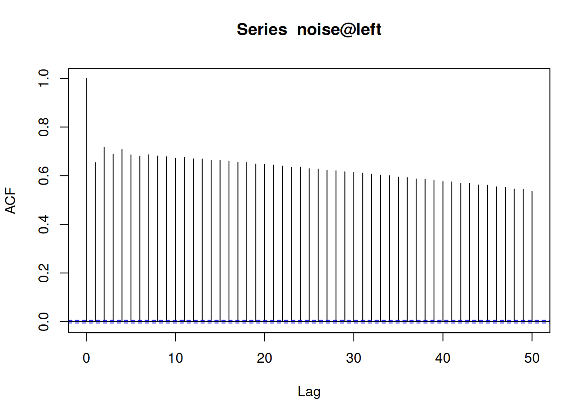
Диаграмм дээрх бүх \(k\geq1\) бүх эрэбийн автокорреляцийн коэффициентын утга хамааралгүйн босгыг давжээ.
\(N_i\) ба \(N_{i-k}\) хоёрын хамаарлыг хэмжихдээ түүврийн бусад элементүүдийн нөлөөг зайлуулбал энэ нь тухайн автокорреляц болно.
pacf(noise@left, lag.max = 25)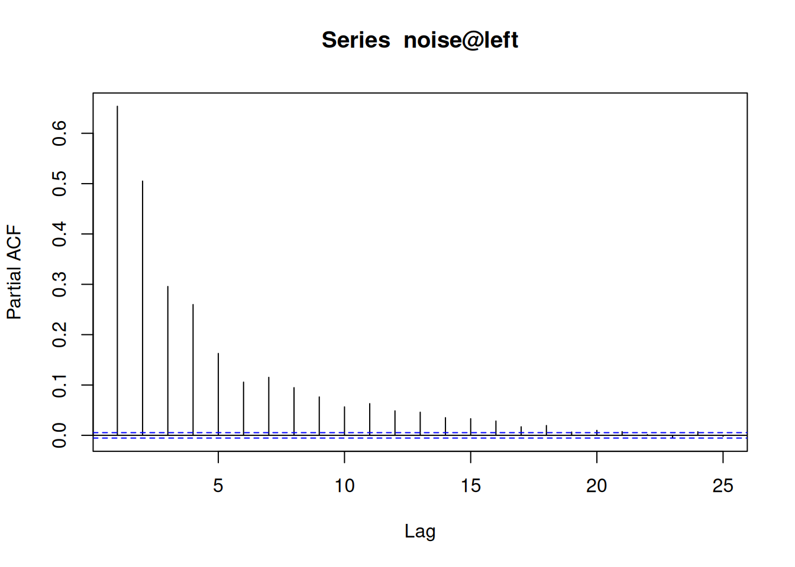
Бусад элементүүдийн нөлөөг зайлуулсан үед түүврийн элементийн нөлөө төдий хол үргэлжлэхгүй байгаа нь тухайн автокорреляцийн диаграммаас харагдана.
Автокорреляцийн коэффициент “өндөр” утгатай байгаа нь түүврийн элементүүд хоорондоо хүчтэй хамааралтай буюу процесс ихээхэн ой санамжтай болохыг илтгэнэ. Иймээс автокорреляц тэгтэй тэнцүү буюу процессыг ой санамжгүй гэсэн таамаглал няцаагдах нь тодорхой юм.
Box.test(noise@left, lag = 1, type = "Ljung-Box")
Box-Ljung test
data: noise@left
X-squared = 56538, df = 1, p-value < 2.2e-16p-value маш бага гарсан нь автокорреляц тэгтэй тэнцүү гэсэн таамаглал няцаагдаж буйг илтгэнэ.
4 Шуугиан болон яриа холилдсон хэсгийг эх дохиотой хугацааны хувьд тааруулах
Эх дохиог авч үзэх тул original.wav файлыг ачаална.
original <- tuneR::readWave("original.wav")Ачаалсан өгөгдлийг агуулах объектыг original гэж нэрлэв.
4.1 Sampling rate буюу секунд тутамд авах түүврийн хэмжээг ижил болгох
original ба speech хоёр дохиог хугацааны хувьд тааруулахдаа хоёр дохионы sampling rate ижил эсэхийг шалгах хэрэгтэй.
original@samp.rate |> cat()48000speech@samp.rate |> cat()44100Энэ нь original дохионы хувьд 1 секунд тутамд 48000 удаа түүвэр авсаныг илтгэх бол speech дохионы хувьд ийм түүврийн хэмжээ 44100 байна. Иймд sampling rate буюу секунд тутамд авах түүврийн хэмжээг ижил болгоно. Ингэхдээ original дохионы sampling rate-ийг speech дохионых адил болгов.
original |>
seewave::resamp(
wave = _, # original объектыг энэ аргумент руу дамжуулна
f = original@samp.rate,
g = speech@samp.rate,
channel = 1, # зүүн суваг
output = "Wave" # tuneR багцын формат
) ->
original # хуучин өгөгдлийг дарж хадгалнаЭнд tuneR::downsample() функц алдаа өгөөд ажиллаагүй тул seewave багцын resamp() функц ашигласан.
original@samp.rate |> cat()44100Энэ нь original дохионы sampling rate өөрчлөгдсөнийг илтгэнэ.
4.2 Хоёр дохиог хугацааны хувьд давхцуулах
Оригинал дохионы урт 222153 нь speech хэсгийн 264601 уртаас их буюу speech дохио дотор original дохио бүтнээрээ багтсан. Иймд хоёр дохиог хугацааны хувьд бүрэн давхцуулах бололцоотой.
Давхацлыг олоход корреляцийн коэффициент ашиглав. Хоёр дохионы давхацлыг олоход корреляцийн коэффициент ашигласан нь дараах шалтгаантай. Шуугианы улмаас speech дохио дотор original дохио яг хэвээрээ байхгүй болно. Бас амплитудын ялгаа ч гарна. Гэхдээ speech нь original дохиог тоглуулан бичиж авахад үүссэн тул speech дотор original дохиотой уялдаатай хэсэг агуулагдана. Чухам ийм уялдааг хэмжихэд ашиглаж болох нэг статистик бол түүврийн корреляцийн коэффициент юм. Улмаар хамгийн их корреляцтай буюу original дохиотой хамгийн сайн тохирох хэсгийг speech дохио дотроос олно. Ингээд тэрхүү хамгийн сайн тохирох хэсгээр хоёр дохиог давхцуулна.
Түүврийн корреляцийн коэффициентыг ижил урттай хоёр түүврийн хувьд боддог тул давхцал аль хэсэгт тохиолдохыг дараах схемийн дагуу олно. \[
\begin{array}{c}
\begin{matrix}
& & & X_1 & \ldots & X_n \\
Y_1 & \ldots & Y_{k} & Y_{k+1} & \ldots & Y_{k+n} & Y_{k+n+1} & \ldots & Y_m
\end{matrix}
\\[1.5em]
\operatorname*{arg\,max}\limits_{k}\;\operatorname{cor}(X_1,\ldots,X_n;\,Y_{k+1},\ldots,Y_{k+n})
\end{array}
\qquad k\in\{0,1,\ldots,m-n\}
\] Эндээс олдох \(k\) аргументын утга нь хоёр түүврийн хамгийн өндөр корреляц \(Y\) түүврийн чухам аль хэсэгт тохиолдохыг илтгэнэ. Дээрх бодлогыг бодож корреляцийг хамгийн их байлгах \(k\) аргументын утгыг олох тооцоолол нүсэр болох тул гарсан үр дүнг файлд хадгалав. Ингэснээр Quarto document файлыг дахин рендерлэхэд зарцуулах хугацааг хэмнэнэ. Жич: original болон speech дохио өөрчлөгдсөн бол энэхүү корреляцийг ахин шинээр тооцоолно.
(\(){
n <- length(original@left)
m <- length(speech@left)
correlations <- vector(mode = "numeric", length = m - n + 1)
section <- 1:n
for (k in 0:{m - n}) {
correlations[k+1] <- cor(original@left, speech@left[k+section])
}
write(correlations, "correlations.txt")
})()Одоо \(\operatorname{cor}(X_1,\ldots,X_n;\,Y_{k+1},\ldots,Y_{k+n})\) корреляцийг хамгийн их байлгах \(k\) параметрийн утгыг өмнө тооцоолон гаргасан корреляцийн коэффициентуудаас олно.
scan("correlations.txt", quiet = TRUE) ->
correlations
{correlations == max(correlations)} |>
which() |> (\(k){
k <- k[1] # олон утга байвал нэгийг нь авна.
k <- k - 1L # R хэлд элементийн индекс 1-ээс эхэлдэг.
})() ->
kЭндээс \(k=28791\) гэж олдоно. Ингээд speech түүврийн \(k+1,\ldots,k+n\) дугаартай элементүүдийг ялгаж аваад speechCCF гэж хадгалав.
speech[{k + 1} : {k + length(original@left)}] ->
speechCCFҮнэхээр корреляцийн коэффициентын утга хоёр дохио давхцаж ирэх үед өндөр утгатай болоод улмаар давхцал холдоход буцан буурч буйг дараах диаграммаас харж болно.
plot(correlations, type = "l", xlab = "k")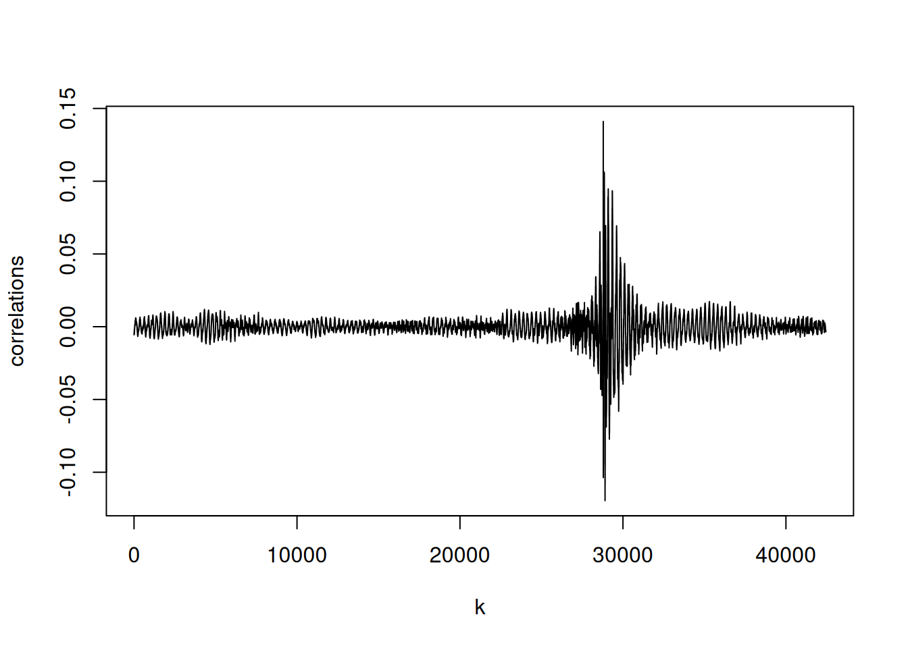
Түүнчлэн корреляцийн хамгийн их утгыг \(k=0,1,\ldots,m-n\) утга нэг бүрчлэн тооцоолж олохоос өөр аргагүй болох нь дараах диаграммаас харагдана. Тус диаграммаас корреляц нь олон локал максимумтайг харж болно.
correlations[k + -1000:1000] |>
plot(
x = -1000:1000,
y = _,
type = "l",
xlab = "k +- 1000", ylab = "корреляц"
)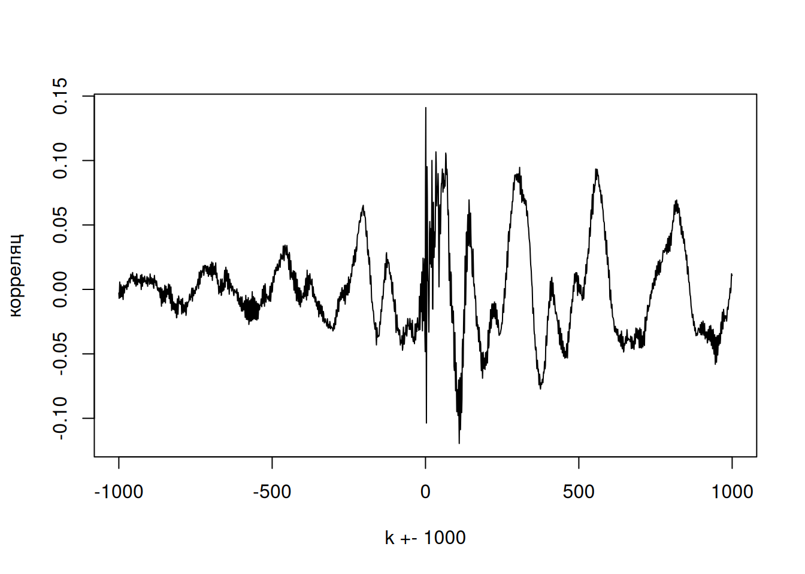
Эцэст нь хоёр дохионы давхацлыг waveform-оор харьцуулсан диаграмм байгуулав.
tuneR::plot(speechCCF)
tuneR::plot(original)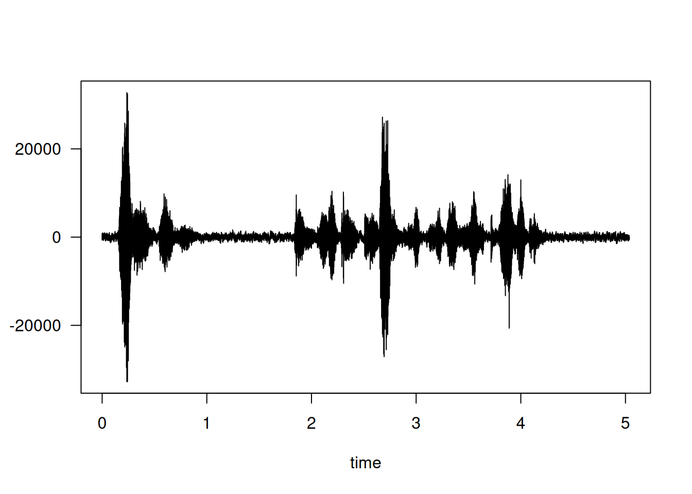
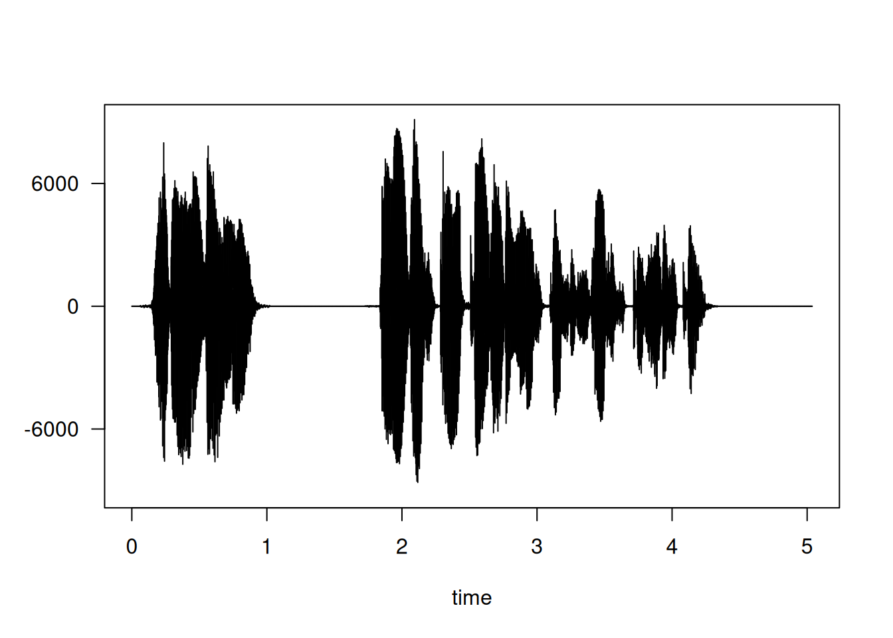
5 Дохио ба шуугианы чадлын харьцааг олох
SNR <- 10 * log10(mean(speechCCF@left^2) / mean(noise@left^2))\(\text{SNR}\approx14.2454824\) гэж олдов. Энэ нь speechCCF дохионы чанар муу болохыг илтгэнэ [4]. Иймд speechCCF дохио дахь шуугианыг шүүж цэвэрлэн дохионы чанарыг сайжруулах хэрэгтэй.
6 Шуугианы давтамжийн домэйн дээрх шинжилгээ ба филтер сонголт
Шуугиан ямар давтамж дээр төвлөрч байгаа олохын тулд үүнийг хугацааны домэйн дээр буюу \(N(t)\) байдлаар бус харин давтамжийн домэйн дээр авч үзэх хэрэгтэй.
Дохиог давтамжийн домэйнд шилжүүлэхэд Фурьегийн хувиргалт ашигладаг. Ийнхүү шуугианы хувьд сигналын спектрийн чадал буюу power spectral density (PSD) хэмжигдэхүүнийг дараах томьёогоор тооцоолно. \[\text{PSD}=|\text{FFT}(N)|^2\] Энд \(\text{FFT}(\cdot)\) нь Фурьегийн хурдан хувиргалт, \(|\cdot|\) нь дохионы магнитуд буюу комплекс тооны модулыг тус тус илэрхийлнэ. Улмаар квадрат зэрэгт дэвшүүлсэнээр дохионы чадал тодорхойлогдоно.
noise@left |>
fft() |> # Фурьегийн хувиргалт
Mod() |> # комплекс тооны модул
(\(x) x^2)() -> # квадрат зэрэг (дохионы чадал)
PSD # power spectral densityЧадлын нягтыг олсон тул одоо дохионы давтамжийн чадлын нягтыг харуулсан периодограмм (periodogram) [5] байгуулна. Давтамжийг 0 Hz-ээс Найквистын давтамж (Nyquist frequency) \(f_s/2\) хүртэл авна. Энд \(f_s\) нь sample rate бөгөөд noise дохионы хувьд \(f_s=44100\) байна.
n <- length(noise@left) # түүврийн хэмжээ буюу дохионы урт
half <- 1:{n %/% 2}
plot(
{half - 1} * {noise@samp.rate / n}, # давтамж (Hz)
PSD[half], # чадлын нягт
type = "l",
xlab = "Давтамж (Hz)",
ylab = "Чадлын нягт",
main = "Шуугианы периодограмм"
)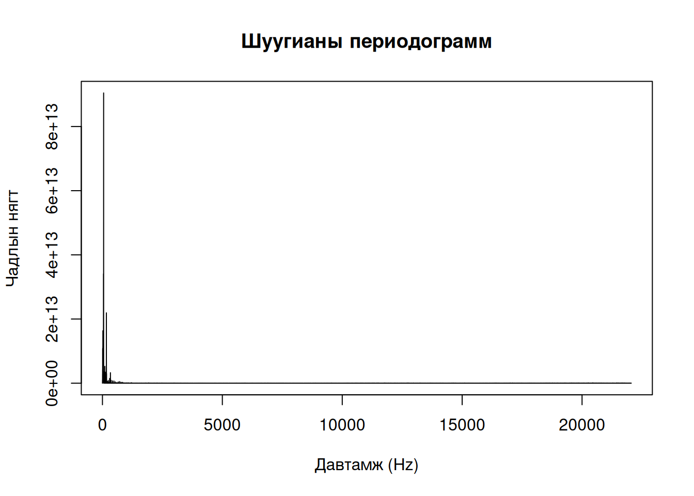
7 Филтер сонгож ажиллуулах ба шүүсэн дохиог шинжлэх
Зураг 10 периодограммаас шуугиан бага давтамж дээр төвлөрч буй нь харагдана. Иймд бага давтамжийг шүүж, өндөр давтамжийг нэвтрүүлдэг фильтер ашиглаж speechCCF дохионы шуугианыг шүүнэ. Гэхдээ ямар давтамжаас дээш үлдээхийг нарийвчлан тогтоохын тулд периодограммыг бага давтамжтай мужид ахин байгуулав.
plot(
{half[1:2940] - 1} * {noise@samp.rate / n}, # давтамж (Hz)
PSD[half[1:2940]], # чадлын нягт
type = "l",
xlab = "Давтамж (Hz)",
ylab = "Чадлын нягт",
main = "Шуугианы периодограмм"
)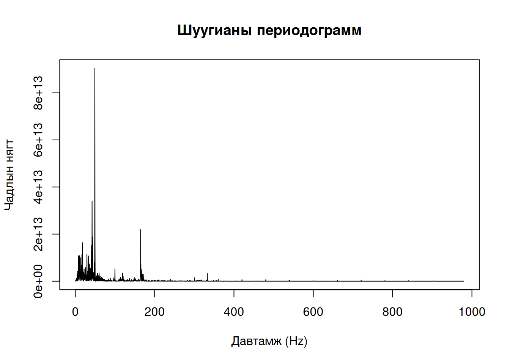
Шуугианы хамгийн их төвлөрөл 50 Hz орчимд байна. Ерөнхийдөө өндөр чадалтай давтамж 400 Hz орчим хүртэл ажиглагдаж байна. Бас хүний ярианд байхгүй 4000 Hz-ээс өндөр давтамжийг арилгана. Ийнхүү давтамжийн зурвасыг л нэвтрүүлдэг Band-Pass фильтер ашиглав.
speechCCF |>
seewave::ffilter(from = 400, to = 4000, bandpass = TRUE, output = "Wave") |>
tuneR::normalize(unit = "16", pcm = TRUE) ->
speechBandPassseewave::ffilter() функц нь Фурьегийн хувиргалтын цонхны параметрийн утгаас шалтгаалан буцаах дохионы урт анх өгсөн дохионыхоос ялгаатай байж болно. Иймд speechBandPass дохиог speechCCF дохиотой ижил урттай болгоно. Энэ нь хоёр дохиог харьцуулахад учрах хүндрэлээс сэргийлнэ.
n <- length(speechCCF)
m <- length(speechBandPass)
if (m > n) {
speechBandPass[1:n,] ->
speechBandPass
} else {
c(
speechBandPass@left,
rep(0L, n - m)
) ->
speechBandPass@left
}Эцэст нь speechBandPass дохиог speechBandPass.wav файлд хадгалав.
speechBandPass |>
tuneR::writeWave(filename = "speechBandPass.wav")7.1 Шүүсэн ба шүүгээгүй дохиог харьцуулах
Шүүсэн ба шүүгээгүй хоёр дохионы ялгааг харьцуулах зорилгоор тэдгээрийн периодограммыг байгуулав.
speechBandPass |> tuneR::periodogram(width = 1024) |> tuneR::plot()
speechCCF |> tuneR::periodogram(width = 1024) |> tuneR::plot()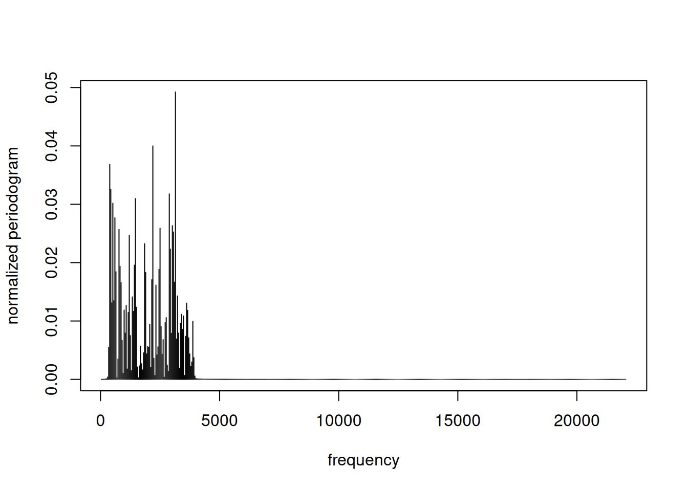
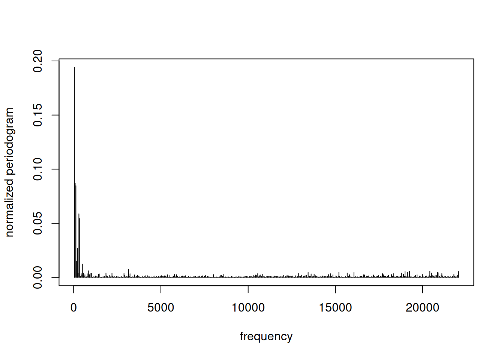
Зураг 12 дээрх хоёр периодограммаас дохиог шүүсний дараа нам болон өндөр давтамж бүрэн шүүгдэж арилсан нь харагдана.
Мөн шүүсэн ба шүүгээгүй дохио тус бүрийн хувьд автокорреляцуудыг олж харьцуулав.
acf(speechBandPass@left, lag.max = 50)
acf(speechCCF@left, lag.max = 50)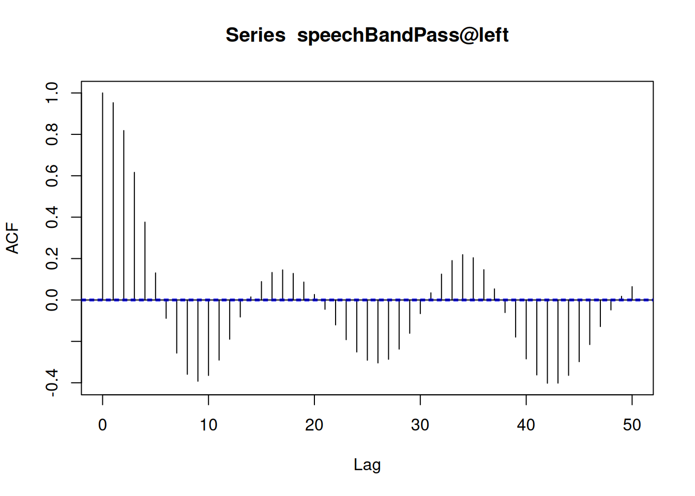
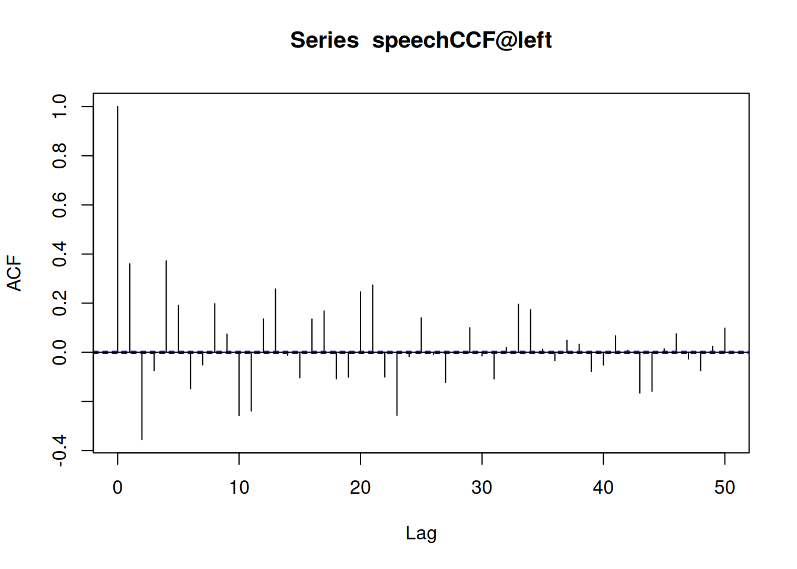
Зураг 13 дээрх шүүсэн ба шүүгээгүй дохионы автокорреляцийн диаграммаас дохиог шүүсний дараа автокорреляц өссөн бөгөөд хоцролтын дагуух автокорреляцийн өөрчлөлт “зөөлөн” болсон бол шүүгээгүй үед тус өөрчлөлт огцом “ширүүн” байна.
Эцэст нь шүүгдэж үлдсэн дохио буюу \[\text{residual\_noise} = \text{speechCCF} - \text{speechButterworthOrder1}\] үлдэгдэл шуугианы автокорреляц тэгтэй тэнцүү гэсэн тэг таамаглалыг \(\alpha=0.05\) ач холбогдлын түвшинд шалгав.
Box.test(speechCCF@left - speechBandPass@left, lag = 1, type = "Ljung-Box")
Box-Ljung test
data: speechCCF@left - speechBandPass@left
X-squared = 85351, df = 1, p-value < 2.2e-16Шинжүүрийн p-value маш бага гарсан нь үлдэгдэл шуугиан автокорреляцтай болохыг илтгэнэ.
7.2 Шүүсэн дохиог эх дохиотой харьцуулах
Одоо speechBandPass дохиог эх дохиотой харьцуулна. Хоёр дохио цаг хугацааны хувьд тохирох тул одоо эдгээрийг харьцуулахдаа зөвхөн амплитудын ялгааг л тооцно. Ийнхүү \[\{\text{speechBandPass}\}=\text{gain}\cdot\{\text{original}\}+\{\text{residual}\}\] загварыг ажиллуулан улмаар үлдэгдлийн стандарт дундаж квадрат алдааг олно.
model <- lm(speechBandPass@left ~ original@left - 1)
residuals(model)^2 |> mean() |> sqrt() |> cat()2757.193Дүгнэлт
- Шуугианд онцгой утга цөөнгүй агуулагдаж байна.
- Шуугиан нь хэвийн тархалттай.
- Шуугианы дундаж тэгтэй тэнцүү.
- Шуугианы автокорреляц тэгээс ялгаатай.
- Дохиог шуугианаас шүүж цэвэрлэсний дараа түүврийн автокорреляц өссөн бөгөөд хоцролтын дагуух автокорреляцийн өөрчлөлт алгуур зөөлөн болж байна.
Ашигласан материал
[1]
R Core Team, R: A language and environment for statistical computing. Vienna, Austria: R Foundation for Statistical Computing, 2026. doi: 10.32614/R.manuals.
[2]
A. C. Codex, “Speech and audio processing with r.” Accessed: Nov. 13, 2026. [Online]. Available: https://reintech.io/blog/speech-and-audio-processing-with-r
[3]
Audacity Team, “Audacity(R): Free Audio Editor and Recorder [Computer software].” https://www.audacityteam.org/, 2026.
[4]
Cora and SPON Communications Co., Ltd., “What Is SNR in Audio? Signal-to-Noise Ratio Explained.” https://sponcomm.com/info-detail/what-is-snr, Oct. 2025.
[5]
Department of Statistics, The Pennsylvania State University, “STAT 510: Applied Time Series Analysis — Lesson 6: The Periodogram.” https://online.stat.psu.edu/stat510/Lesson06, 2026.